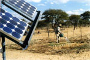
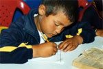
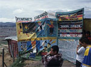
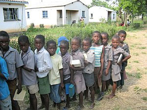

|
Mittwoch. 17. Dezember 2008 |
Fotoclub „Tele 77“ Kuppenheim spendet für indigene Völker |
|
|
| Spenden�bergabe von Christel Pletat an Heinz Wolf von terre des hommes Murgtal/Mittelbaden. |
Der Fotoclub hatte zum dritten Male angekündigt, anlässlich seiner Multivisionsschau von Petra und Gerhard Zwerger-Schoner zu Australien in der Kuppenheimer Wörtelhalle für jeden Besucher einen Euro an terre des hommes zu spenden. Der Betrag wurde seitens des Fotoclubs großzügig aufgerundet und so konnte in der Pause des mit 250 Anwesenden sehr gut besuchten Vortrags Christel Pletat abermals an Heinz Wolf einen Scheck über insgesamt € 400.-- überreichen.
„Wir haben die Bilder über die Ureinwohner Australiens, die Aborigines, zum Anlass genommen, diesen Betrag und weitere Aktionserlöse dem Projekt SAN in Namibia zur Verfügung zu stellen“, so Heinz Wolf, Sprecher der rührigen Arbeitsgruppe terre des hommes Murgtal/Mittelbaden. Die San sind ein traditionelles Volk von Jagenden und Sammelnden. Tagelang streiften und rannten sie durch die endlosen Sandebenen der Kalahari auf der Suche nach Nahrung. Soweit es die ständige Vertreibung und Umsiedlung zulässt, tun sie das noch heute.
Ein indigenes Volk mit Zukunft. Erstmals werden afrikanische Ureinwohnende an Pharma-Gewinnen beteiligt. Die San im südlichen Afrika sind bei uns noch immer als Volk der "Buschmänner" bekannt. Die San leben vor allem in der Kalahari-Wüste in Südwestafrika. Jetzt gibt es für sie eine gute Nachricht, dank des "Abnehm-Elixiers P57": Wenn der US-Konzern Pfizer in wenigen Jahren mit seiner neuen Schlankheits-Wunderwaffe auf den Markt kommt, werden die San an den Gewinnen aus dem Patent beteiligt. Ein langer Kampf - mit Unterstützung von terre des hommes - war notwendig, um diesen Erfolg zu erreichen. Erstmals ging damit ein Pharmaunternehmen eine solche Verpflichtung ein. Aus gutem Grund: Schließlich basiert das Elixier P 57 auf dem Hoodia-Kaktus - und auf dem traditionellen Wissen der San.
Weitere Informationen:
|
Dienstag, 16. Dezember 2008 |
Danuta Sacher wird neue Geschäftsführerin von terre des hommes |
Die 53-jährige Entwicklungsexpertin wird Nachfolgerin von Peter Mucke, der zum 1. Januar 2009 die
Geschäftsführung des Bündnisses Entwicklung hilft übernimmt. Sacher wird ihr Amt in Osnabrück zum
1. Mai 2009 antreten.
Danuta Sacher ist zurzeit noch Leiterin der Abteilung Politik und Kampagnen der
Entwicklungsorganisation Brot für die Welt in Stuttgart. Zuvor arbeitete sie im Bereich der
Flüchtlings- und Menschenrechtsarbeit in Mittelamerika, als Projektreferentin bei der
Evangelischen Zentralstelle für Entwicklungshilfe und als Geschäftsführerin der
Informationsstelle Guatemala in Bonn.
"Wir freuen uns auf die Zusammenarbeit mit Danuta Sacher", erklärte Ursula Pattberg, Vorsitzende
von terre des hommes. "Wir sind sicher, mit ihr jemanden gefunden zu haben, die das Profil von
terre des hommes als entwicklungspolitisches Kinderhilfswerk mit weiterentwickeln und unseren
Einsatz für die Rechte von Kindern weiter stärken wird." |
Dienstag, 09. Dezember 2008 |
Künstlerin Heidrun Dautner überreicht 700 Euro Spendenscheck aus Inszenierung "Übergänge" |
„Übergänge“ hießt die künstlerische Inszenierung, die Künstlerin Heidrun Dautner im September dieses Jahres in einer Gaggenauer Fabrikhalle gestaltet hatte. Unzählige Besucher ließen sich zwei Tage lang in Traumwelten entführen, in die sie Dautner mit ihren Masken und Köpfen, Klängen und Lauten, Tänzen und Musik mitnahm. Vor wenigen Tagen überreichte sie einen Scheck in Höhe von 700 Euro als Erlös aus der Ausstellung an die terre des hommes Arbeitsgruppe Murgtal/Mittelba-den. Seit vielen Jahren bereits unterstützt die Künstlerin terre des hommes mit künstlerischen Exponaten und Spenden. Viele ihrer gespendeten Bilder konnten bis jetzt im Rahmen des Kunstmarkts auf dem terre des hommes Herbstbasar verkauft werden und somit immer wieder Kindern auf der Welt helfen. Mit ihrer diesjährigen Spende wird das terre des hommes Hilfsprojekt „Thembalethu“ (Unsere Hoffnung) in Südafrika unterstützt, das Straßenkindern neue Hoffnung gibt. „Ohne Eva Weis und Hellmut Ruder, Roland Peuker sowie Ulrike und Joachim Dinger wäre die künstlerische Inszenierung nicht so erfolgreich gewesen“, dankte Dautner allen Mitwirkenden.
|
Dienstag, 09. Dezember 2008 |
Zum 60. Jahrestag der Allgemeinen Erklärung der Menschenrechte am 10. Dezember
International einklagbare Kinderrechte statt Sonntagsreden
terre des hommes: Kinderrechte in die Verfassung! |
Zum 60. Jahrestag der Verabschiedung der Allgemeinen Erklärung der
Menschenrechte forderte die Kinderhilfsorganisation terre des hommes Politiker und Parteien auf,
den Rechten aller Menschen Vorrang vor wirtschaftlichen Partikularinteressen zu geben. "Würden
die Zahlen der Kinder, die in Deutschland von Sozialhilfe leben, immer noch steigen, würden immer
noch 220 Millionen Kinder weltweit Opfer sexueller Gewalt, würden immer noch Menschen in
Kolumbien oder Burma für Großprojekte vertrieben, wenn in den täglichen Nachrichten darüber
ebenso ausführlich berichtet würde, wie über den aktuellen Kurs des DAX?", so Ursula Pattberg,
Vorsitzende von terre des hommes.
Ein Drittel der Weltbevölkerung sind Kinder und Jugendliche. Nachdem deren speziellen
Bedürfnisse bei der Allgemeinen Erklärung der Menschenrechte noch kaum Berücksichtigung fanden,
sei es ein wichtiger Erfolg der Völkergemeinschaft, sie in der UN- Kinderrechtskonvention von 1989
zu konkretisieren. Doch während etwa das internationale Handelsrecht Sanktionsmöglichkeiten
vorsehe, seien die wirtschaftlichen, sozialen und kulturellen Rechte insbesondere von Kindern
immer noch ein "zahnloser Tiger".
Angesichts des bevorstehenden Wahljahrs forderte Pattberg die Parteien auf, die Aufnahme von
Kinderrechten in die Verfassung und eine Vorreiterrolle für die Einrichtung eines
Individualbeschwerderechtes zur Kinderrechtskonvention in ihre Wahlprogramme aufzunehmen.
Vordringlich sei auch ein Kurswechsel der deutschen Ausländer- und Migrationspolitik, damit
Flüchtlingskindern gemäß dem Diskriminierungsverbot der Kinderrechtskonvention vom deutschen
Staat keine Rechte mehr verweigert werden dürften.
"Zum 60jährigen Jubiläum der Allgemeinen Erklärung der Menschenrechte fordern wir statt
Sonntagsreden in diesen drei Punkten klare Zusagen der derzeit politisch Verantwortlichen und
derer, die sich um das Regierungsamt bewerben", so Pattberg. |
Montag, 08. Dezember 2008 |
1.200 außergerichtliche Hinrichtungen in sechs Jahren
Kolumbien: Anreiz zum Töten abschaffen!
Erste Überprüfung Kolumbiens durch UN Menschenrechtsrat |
Die deutsche Außenpolitik muss den systematischen Charakter der
Menschenrechtsverletzungen durch den kolumbianischen Staat ernster nehmen und auf einen
grundsätzlichen Wandel der Sicherheitspolitik drängen. Dies forderten das Menschenrechtsbüro
kolko e.V. und die Kinderhilfsorganisation terre des hommes. Anlass ist der Besuch des
stellvertretenden kolumbianischen Verteidigungsministers am 8. und 9. Dezember in Berlin. "Die
jüngste Amtsenthebung von inzwischen 40 zum Teil hochrangigen Militärs nach der Verschleppung und
Ermordung von elf Jugendlichen aus einem Armenviertel in Kolumbien ist zu begrüßen. Die
Völkergemeinschaft darf sich mit diesen kurzfristig ergriffenen Einzelmaßnahmen aber nicht
zufriedenstellen", erklärte Wolf-Christian Ramm, Pressesprecher von terre des hommes. In der
Vergangenheit seien solche Entlassungen erfolgt, ohne notwendigerweise Ermittlungen und Verfahren
nach sich zu ziehen.
"Wie viele Militärs müssten entlassen werden, wenn die über 1.200 in den letzten sechs Jahren
bekannt gewordenen Fälle ernsthaft verfolgt würden?", fragte Alexandra Huck von kolko e.V. Schuld
an den steigenden Zahlen außergerichtlicher Hinrichtungen sei vor allem die nach wie vor hohe
Straflosigkeit für solche Taten. Zugleich gebe es keine effektiven Kontrollen die gewährleisten,
dass Soldaten nicht für diese angeblichen "militärischen Erfolge" auch noch belohnt würden. Die
Mordopfer wurden vom Militär als im Kampf getötete Guerillas präsentiert, um ihre
Erfolgsstatistiken aufzubessern und Belohnungen erhalten zu können. Die deutsche Politik, so
Huck, solle gegenüber dem kolumbianischen Staat darauf drängen, dieses "Anreizsystem zum Töten"
effektiv abzuschaffen, statt immer wieder diejenigen zu diffamieren, die auf diese schweren
Menschenrechtsverletzungen aufmerksam machen.
Der Menschenrechtsrat der Vereinten Nationen führt am 10. Dezember, dem 60. Jahrestag der
Verabschiedung der Allgemeinen Erklärung der Menschenrechte, die erste Überprüfung Kolumbiens im
Rahmen des neuen Verfahrens (Universal Periodic Review) durch. Die kolumbianische Regierung, so
kolko und terre des hommes, habe viel zu spät und zu zögerlich reagiert, obwohl
Menschenrechtsorganisationen seit Jahren über die außergerichtlichen Hinrichtungen berichten. Die
Organisationen hoffen, dass der UN-Menschenrechtsrat alle Möglichkeiten ausschöpft, um den
Menschenrechten in Kolumbien zur Durchsetzung zu verhelfen.
Weitere Informationen:
|
Freitag, 05. Dezember 2008 |
Katastrophale Lage in Simbabwe:
terre des hommes bittet um Spenden für Simbabwe
20.000 Euro für Nahrungsmittel und sauberes Trinkwasser bereitgestellt |

Angesichts der katastrophalen Lage in Simbabwe ruft das entwicklungspolitische Kinderhilfswerk terre des hommes dringend zu Spenden auf. Die Menschen
leiden seit Jahren unter der Politik der Regierung, die nun den Notstand ausgerufen hat. "Unsere
Partner in Simbabwe berichten uns von katastrophalen Zuständen im Land. Viele Menschen
insbesondere in den ländlichen Gebieten stehen seit Monaten buchstäblich vor dem Hungertod und
sind damit besonders anfällig für Krankheiten wie Cholera", erklärte Wolf-Christian Ramm,
Pressesprecher von terre des hommes. "Und wie in allen Katastrophen leiden die Kinder besonders
unter Hunger und Krankheiten."
terre des hommes hat deshalb 20.000 Euro bewilligt, um im Distrikt Gutu im Süden des Landes
Nahrungsmittel und sauberes Trinkwasser bereitzustellen. Mit dem Geld werden Mais, Mehl und
Chlortabletten zur Wasseraufbereitung gekauft. 14.000 Kinder werden durch das Hilfsprogramm
erreicht und erhalten eine nahrhafte Getreidemahlzeit. Außerdem werden mit dem Geld defekte
Brunnen repariert, damit die Menschen nicht schmutziges Wasser aus Pfützen und Rinnsalen trinken
müssen.
"Wir können schnelle und konkrete Hilfe leisten, doch ohne eine politische Lösung der Krise
durch die internationale Gemeinschaft kann Simbabwe auf Dauer nicht existieren", so Ramm. Die
Weltöffentlichkeit müsse Anteil an der Katastrophe in Simbabwe nehmen. Anders sei eine
Verbesserung der Situation nicht zu erreichen.
Zum Ausbau der Hilfe und zur Förderung weiterer Programme bittet terre des hommes dringend um
Spenden:
Stichwort: Nothilfe Simbabwe:
Spendenkonto 120 790
Sparkasse Gaggenau-Kuppenheim
BLZ 665 512 90
Spendenkonto 102 748 00
VoBa Baden-Baden/Rastatt
BLZ 662 900 00
Spendenkonto 700 800 700
Volksbank Osnabrück eG
BLZ 265 900 25
Weitere Informationen:
|
Dienstag, 02. Dezember 2008 |
Weltkonferenz über Entwicklungsfinanzierung in Doha vor dem Abschluss
Minimalkonsens bewahrt UNO vor Bedeutungslosigkeit
terre des hommes und Global Policy Forum bewerten Ergebnisse kritisch |
Die Regierungen haben sich in Doha auf einen Minimalkonsens
geeinigt, der die UNO davor bewahrt, in die Bedeutungslosigkeit zu versinken. Diese ernüchternde
Bilanz ziehen das entwicklungspolitische Kinderhilfswerk terre des hommes und das Global Policy
Forum zum Ende der UN-Konferenz über Entwicklungsfinanzierung in Doha.
Dr. Klaus Schilder, terre des hommes-Referent für Entwicklungspolitik, stellt fest: "Es ist ein
Erfolg, dass die Aktivitäten zur Überwindung der globalen Finanzkrise nicht auf die G20
beschränkt bleiben. Wir begrüßen ausdrücklich, dass die Regierungen in Doha auf die Dringlichkeit
der Finanzkrise reagiert haben und noch im Jahr 2009 einen UN-Gipfel über die globale Finanzkrise
und deren Folgen für Entwicklung abhalten werden. Diese 'G192', nämlich die UNO mit ihren 192
Mitgliedsstaaten, ist das einzige legitimierte globale Forum, um eine umfassende Reform der
internationalen Finanzarchitektur anzustoßen, die auch die Interessen der Entwicklungsländer
berücksichtigt."
Im Abschlussdokument von Doha haben die Regierungen grundsätzlich anerkannt, dass sie in
internationalen Steuerfragen enger zusammenarbeiten müssen. Dazu erklärt Jens Martens vom Global
Policy Forum: "Die Entwicklungsländer verlieren jährliche Hunderte von Milliarden Euro durch
Kapital- und Steuerflucht. Es war daher überfällig, dass die UN der internationalen Kooperation
in Steuerfragen stärkere Bedeutung beimessen. Die Entscheidung über eine substantielle Aufwertung
des dafür zuständigen UN-Ausschusses für Steuerfragen wurde aufgrund der Blockadehaltung der USA
allerdings auf 2009 vertagt. Wir begrüßen die Initiative der Bundesentwicklungsministerin für
einen internationalen Pakt gegen Steuerflucht. Nun müssen dieser politischen Ankündigung von Doha
aber konkrete Schritte folgen."
|
|
|
|
 Ansprechpartner Ansprechpartner
|
|
Wolfgang Deppisch
(Projektinfos)
Tel. 07222 / 32927
Heinz Wolf
(Sponsoring, Allgemeines)
Tel. 07225 / 75543
weitere Ansprechpartner
|
|
Erlöse
1992-2012
|
|

Jahr |
Euro |
1992 |
70.000 |
1993 |
75.600 |
1994 |
83.883 |
1995 |
69.617 |
1996 |
51.412 |
1997 |
61.749 |
1998 |
60.333 |
1999 |
68.742 |
2000 |
85.492 |
2001 |
106.375 |
2002 |
78.937 |
2003 |
84.027 |
2004 |
76.662 |
2005 |
149.941 |
2006 |
84.497 |
2007 |
105.958 |
2008 |
104.053 |
2009 |
100.833 |
2010 |
107.254 |
2011 |
103.600 |
| 2012 |
158.250 |
| 2013 |
163.420 |
1977-2013 |
mehr als 2,7 Mio. € |
|
Detailansicht der Erlöszahlen |
|
|


;)
;)
;)